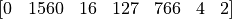

How SpanMarker works¶
SpanMarker is an accessible yet powerful Python module for training Named Entity Recognition models. In this notebook, we’ll go over the specific model details that make SpanMarker so powerful.
The SpanMarker model is quite simple at a glance: no contrastive learning, just passing single sentences through a pretrained (BERT, RoBERTa, etc.) encoder and using a simple cross entropy loss of embeddings against labels to finetune the encoder. However, there are some notable ideas that set it apart. First of all, I want to mention that these ideas are inspired by PL-Marker.
Step by step example¶
Consider the following example input sentence: "Tom is my name.", which tokenizes to this using the standard RoBERTa tokenizer:

In addition to these tokens, we also have position IDs, which tells the RoBERTa encoder where in the text each of these tokens exist. In the above example, the position IDs are:
For this example, we consider a maximum token length of 16 (note: this is unreasonably low, 256 or 512 would be more sensible in real scenarios). The SpanMarker codebase pads using 0’s, so then the padded tokens (input_ids) are:
And the position IDs now become: